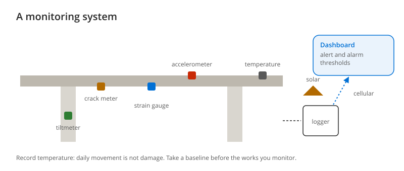

Structural health monitoring
In one sentence: inspection is a snapshot; monitoring measures the structure continuously or at set intervals, so you see whether a crack is growing, a support is settling or the structure responds differently than it should.

When to monitor
- A defect whose progression decides the action: a crack, settlement, tilt.
- During nearby works: excavation, tunneling, pile driving, demolition.
- After a repair or strengthening, to check it works.
- On structures of high importance or with uncertain behavior, to support load ratings or extend service life.
Common sensors
| Measures | Sensors |
|---|---|
| Crack opening | Crack meters (vibrating wire, potentiometric), demountable gauges |
| Strain | Vibrating wire or foil strain gauges, fiber-optic sensors (FBG, distributed) |
| Tilt and rotation | Tiltmeters, inclinometers |
| Displacement and settlement | LVDTs, laser and total station surveys, GNSS, leveling |
| Vibration and dynamic response | Accelerometers |
| Environment | Temperature, humidity, wind, water level |
| Corrosion | Embedded corrosion sensors |
The system
Sensors connect to a data logger on site, powered by mains, solar or batteries, which sends data by cellular link to a database and dashboard. Thresholds (alert and alarm levels) send notices when a reading passes them. Always record temperature: most structures move with it, and that movement must be separated from real change.
Making it useful
- Define the question and thresholds before installing.
- Take a baseline before the event or works you're watching.
- Check sensors are working: a flat line can mean a stable structure or a dead sensor.
- Combine with periodic visual inspection.
Digital twins
Monitoring data can feed a model of the structure (a digital twin) that compares measured and predicted behavior. It's useful when the model is calibrated and someone acts on the differences.
Common mistakes
- Installing sensors with no defined thresholds or response plan.
- No baseline before works start.
- Mistaking daily temperature movement for crack growth.